Getting started with VizSeasonalGams
Collin Edwards
Source:vignettes/getting-started.Rmd
getting-started.Rmd##
## Attaching package: 'dplyr'## The following objects are masked from 'package:stats':
##
## filter, lag## The following objects are masked from 'package:base':
##
## intersect, setdiff, setequal, union## Loading required package: nlme##
## Attaching package: 'nlme'## The following object is masked from 'package:dplyr':
##
## collapse## This is mgcv 1.9-3. For overview type 'help("mgcv-package")'.
options(rmarkdown.html_vignette.check_title = FALSE)
knitr::opts_chunk$set(echo = TRUE,
fig.width = 8,
fig.height = 6,
out.width = "80%", # HTML output width
dpi = 300,
fig.retina = 2,
dev = "png")
set.seed(10)Overview
VizSeasonalGams is a package to make understanding
complex generalized additive models (GAMs) fit with the R package
mgcv easier, producing plots of model predictions for all
relevant combinations of factorial predictors.
This package was originally motivated by modeling seasonal patterns of angler catch rates of different classes of fish in different years, sometimes incorporating other categorical predictors (gear type, region). When the fitted model allowed seasonal patterns to vary based on these categorical predictors, it became unwieldy to look at how model predictions varied across different combinations of predictor values. This was compounded by wanting to compare model predictions between models with different structures.
VizSeasonalGams automates the process of visualizing
model predictions from fitted mgcv models, allowing us to
focus on understanding the model rather than writing visualization
code.
If you are looking at this package and you are not already familiar
with the gratia
package, I highly recommend taking a look at it as well. gratia is a
useful and robust toolkit for working with mgcv models, and
covers things like model diagnostics, visualizing partial effects plots,
and estimating derivatives. It’s fantastic! I developed
VizSeasonalGams to fulfil a role that gratia does not
currently: visualizing model predictions.
Getting started
In this vignette I will use examples of fish counts varying across
day of year in ways that depend on other categorical predictors (year,
fish class). However, despite the name, VizSeasonalGams is
not limited to gams of seasonal patterns. Any mgcv model
with at least one smooth across a continuous variable will work – for
example, temperature response curves, or dose-response curves.
To facilitate exploring this package, VizSeasonalGams
includes two simulation functions. simulate_data generates
reasonable fish count data that could be fit with a gam model:
data = simulate_data()
head(data)## # A tibble: 6 × 5
## doy year mark_stage yearfac fish_count
## <int> <int> <fct> <fct> <int>
## 1 208 2021 Jack 2021 0
## 2 208 2021 AD Adult 2021 2
## 3 208 2021 UM Adult 2021 1
## 4 208 2021 Jack 2021 0
## 5 208 2021 AD Adult 2021 0
## 6 208 2021 UM Adult 2021 1Here “doy” is day of year, yearfac is year (as a
factor), and mark_stage is a fish classification (“Jack” =
smaller fish, “AD Adult” = marked adult, “UM adult” = unmarked
adult).
simulate_gam() uses simulate_data(), fits an mgcv model
of the form
fish_count ~ mark_stage + s(doy, by = mark_stage, k = 20) + yearfac,
and returns the fitted model. For your own explorations, it is
sufficient to simply use the output of simulate_gam() to
test the visualization functions of VizSeasonalGams. For
clarity we will fit the model explicitly here.
model = gam(fish_count ~ mark_stage +
s(doy, by = mark_stage, k = 20) +
yearfac,
method = "REML",
family = "nb",
data = data)This model has a smooth across day of year which varies by fish stage, and total catch is also affected by year.
The workhorse function of VizSeasonalGams is
plot_seasonal_gam_panels(), which makes a tibble of
categorical predictors and model prediction plots. Each combination of
categorical predictors represented in the original data is given its own
row, and the .$plot column of each row shows “panels” of
the model predictions as a function of the key variable being smoothed
across (defaults to “doy”, but can be specified with the optional
plot_by argument). For example:
panels = model |>
plot_seasonal_gam_panels()## → `color_by` not provided. Defaulting to no color.## → Options for `color_by`: mark_stage and yearfac.
panels## # A tibble: 9 × 3
## mark_stage yearfac .plot
## <fct> <fct> <list>
## 1 Jack 2021 <patchwrk>
## 2 AD Adult 2021 <patchwrk>
## 3 UM Adult 2021 <patchwrk>
## 4 Jack 2022 <patchwrk>
## 5 AD Adult 2022 <patchwrk>
## 6 UM Adult 2022 <patchwrk>
## 7 Jack 2023 <patchwrk>
## 8 AD Adult 2023 <patchwrk>
## 9 UM Adult 2023 <patchwrk>We can access each of the plots directly, like so:
panels$.plot[[1]]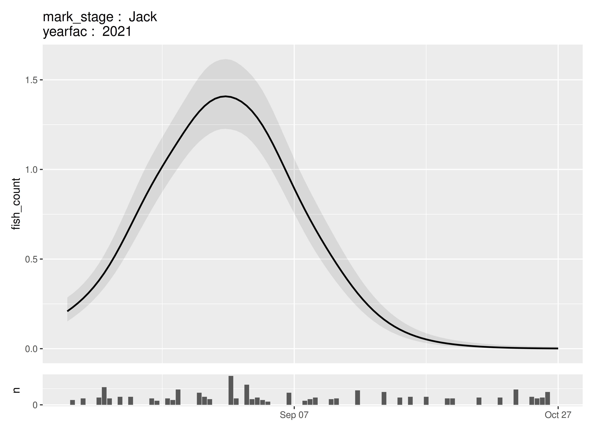
In models that contain additional continuous variable, the median value across the original dataset is used when creating these panels.
The tibble of panels (or a subset thereof) can be presented as a
joint plot using wrap_panels() and
grid_panels(). These are intended to fill similar roles
tofacet_wrap and facet_grid.
wrap_panels() is the simplest, as it simply combines
each of the panels in order:
wrap_panels(panels)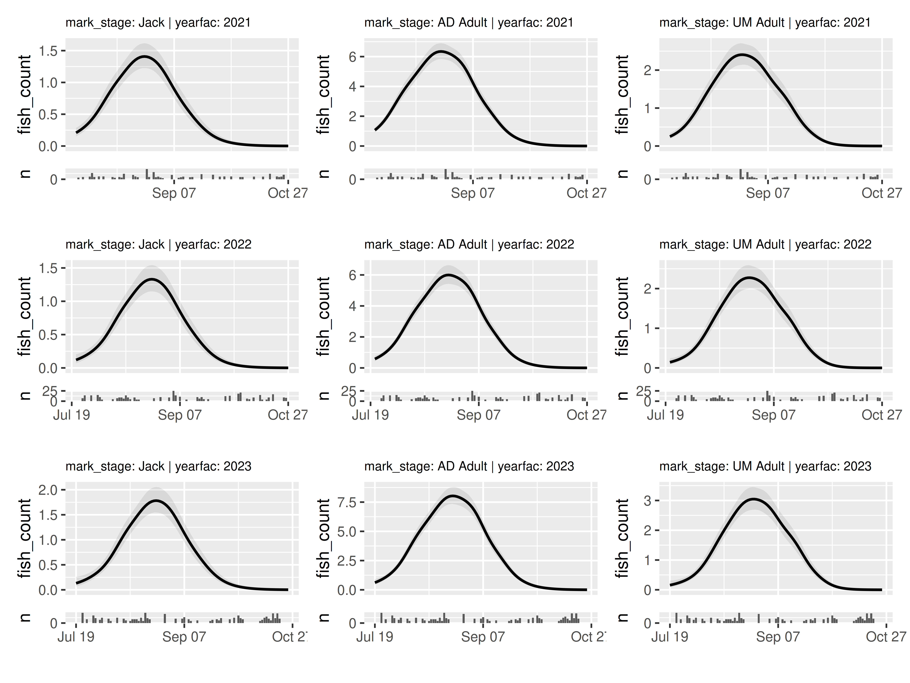
grid_panels() organizes the panels based on two
categorical predictors that are represented in the panels tibble:
grid_panels(panels, column_var = "yearfac", row_var = "mark_stage")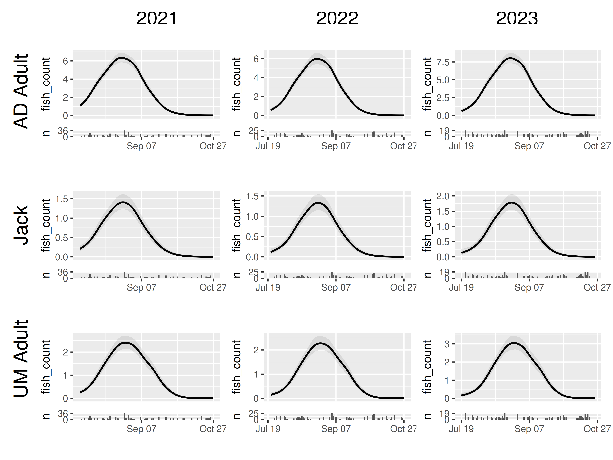
Both of these functions can work on subsetted versions of the panel tibble. For example, imagine we are only interested in the smooths of 2021:
panels |>
filter(yearfac == "2021") |>
wrap_panels()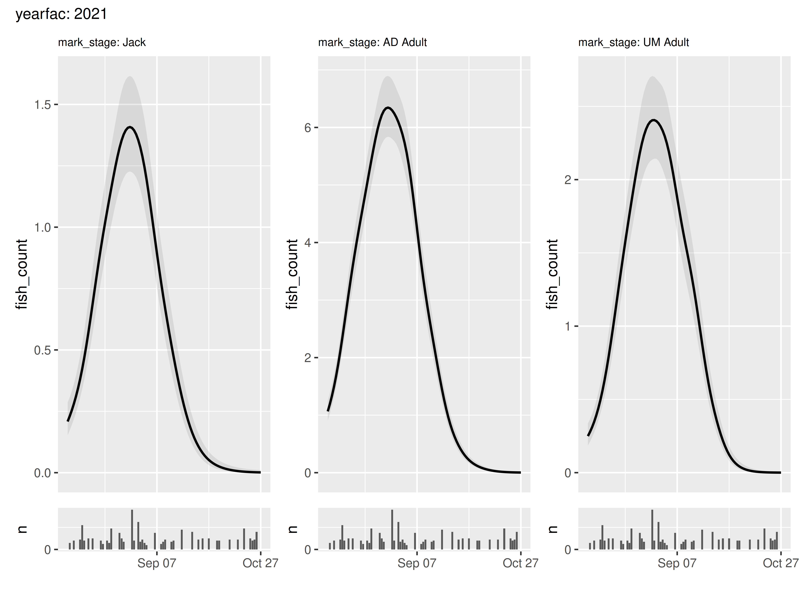
Or perhaps we want to take a grid view, but our jack results look a bit funky so we want to remove them:
panels |>
filter(mark_stage != "Jack") |>
grid_panels(column_var = "yearfac", row_var = "mark_stage")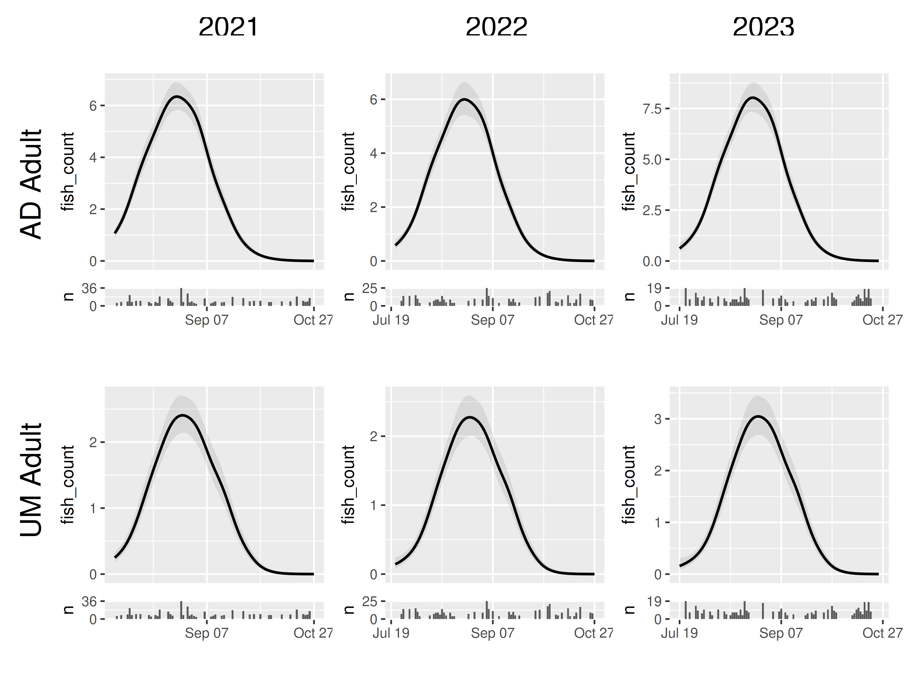
Generalizing plots
The default behavior of plot_seasonal_gam_panels is
based on my own most common use case: looking at seasonal smooths across
a day of year variable labeled “doy”. For looking at smooths across
other variable names and types of data, we can change the values of
arguments plot_by and labeler_x.
plot_by can take the name of a continuous variable used in
the model, and will use that to determine the x axis of each panel.
labeler_x can take any function, and uses that to label the
x axis as per
ggplot::scale_x_continuous(labels = labeler_x). By default
it uses the doy_2md() function defined in
VizSeasonalGams, which translates numeric day of year to
month-day string. Setting labeler_x to NULL
will instead present x labels in their original values.
Depending on the scale of the data we’re trying to plot, we may also
need to change the argument across_increment. This term
defines the x resolution of our predictions plots and defaults to 1;
this is an appropriate resolution for daily samples (e.g., one
prediction per day), but not so appropriate when our x variable has a
much smaller range.
As an example, here we visualize one of the simpler models fit in the
excellent Pedersen et
al. 2019. We use the built-in CO2 data. Here we’re smoothing across
log(concentration). Note that presently plot_seasonal_gam_panels
does not properly handle predictors that are functions. So
instead of using log(conc) directly in our model, we need
to create a new variable log_conc that is log
concentration, and then use that in the model.
We make three changes to the default behavior of
plot_seasonal_gam_panels: change plot_by to
reflect our x variable of interest, change labeler_x to
NULL because our x axis is no longer a date, and set
across_increment to 0.01 to reflect our smaller range of x
axis values.
## recode plant from ordered to unordered
CO2 <- transform(CO2, Plant_uo=factor(Plant, ordered=FALSE)) |>
mutate(log_conc = log(conc),
log_uptake = log(uptake))
## fit model
model_co2 <- gam(log_uptake ~ s(log_conc, k=5, bs = "tp") +
s(Plant_uo, k=12, bs="fs", m=2),
data=CO2, method="REML")
model_co2 |>
plot_seasonal_gam_panels(plot_by = "log_conc",
labeler_x = NULL,
across_increment = 0.01) |>
wrap_panels()## → `color_by` not provided. Defaulting to no color.## → Options for `color_by`: Plant_uo.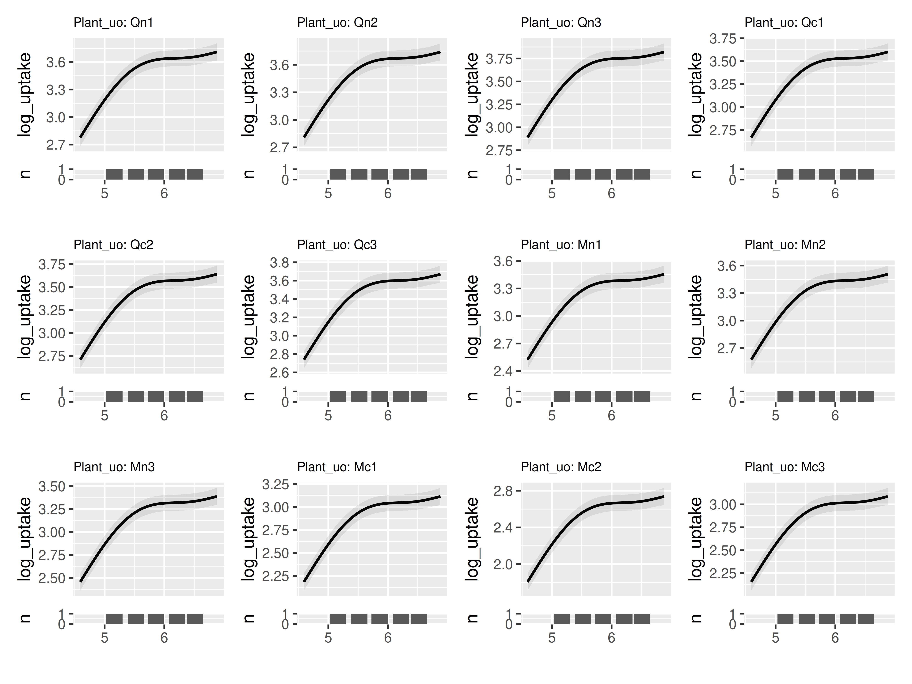
Customizing plots
Modifying panels
By default plot_seasonal_gam_panels() includes a data
coverage plot at the bottom of the panel. This plot takes the role that
rugplots typicaly do in mgcv and gratia. As
compared to rugplots, this approach takes up more realestate, but gives
more information when multiple records can have the same x value (as is
commonly the case when using day-of-year; multiple surveys may occur on
the same day). This behavior can be turned off with
plot_coverage = FALSE:
temp = model |>
plot_seasonal_gam_panels(plot_coverage = FALSE)## → `color_by` not provided. Defaulting to no color.## → Options for `color_by`: mark_stage and yearfac.
temp$.plot[[1]]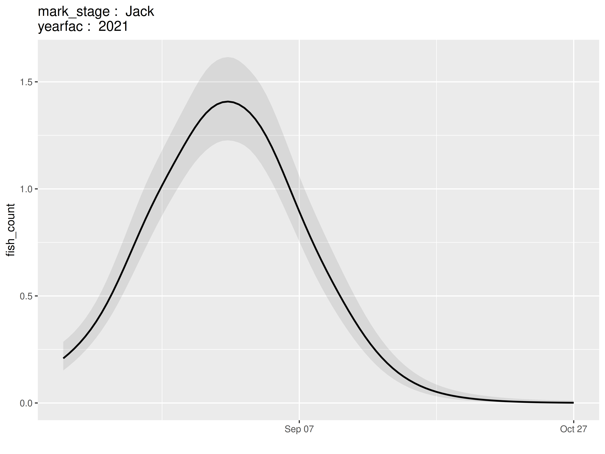
wrap_panels(temp)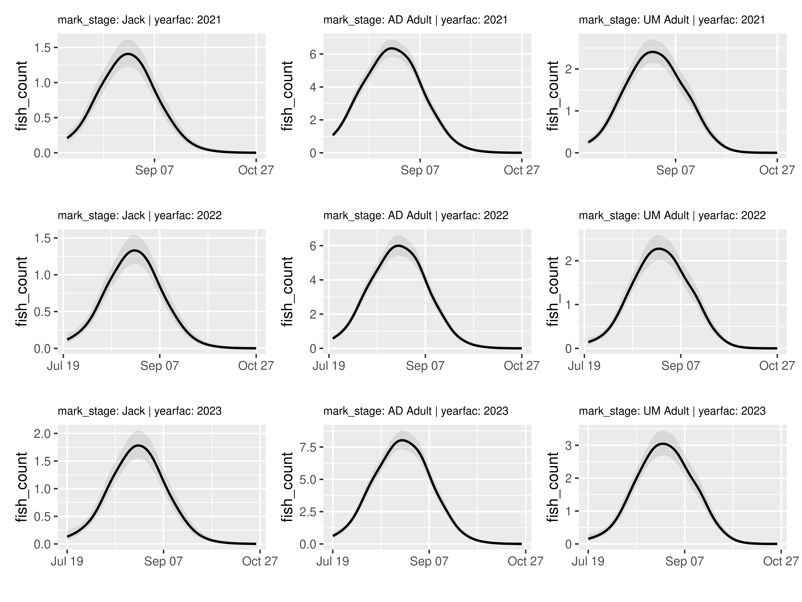
(Presently there is no implementation of rugplots, nor coverage plots along the X axis; reach out to the developer if these are features you would value.)
Sometimes it can be useful to include multiple prediction curves in a
single panel. The optional argument color_by in
plot_seasonal_gam_panels() can take the name of a
categorical variable in the data in order to do just that.
model |>
plot_seasonal_gam_panels(color_by = "yearfac") |>
wrap_panels(ncol = 1)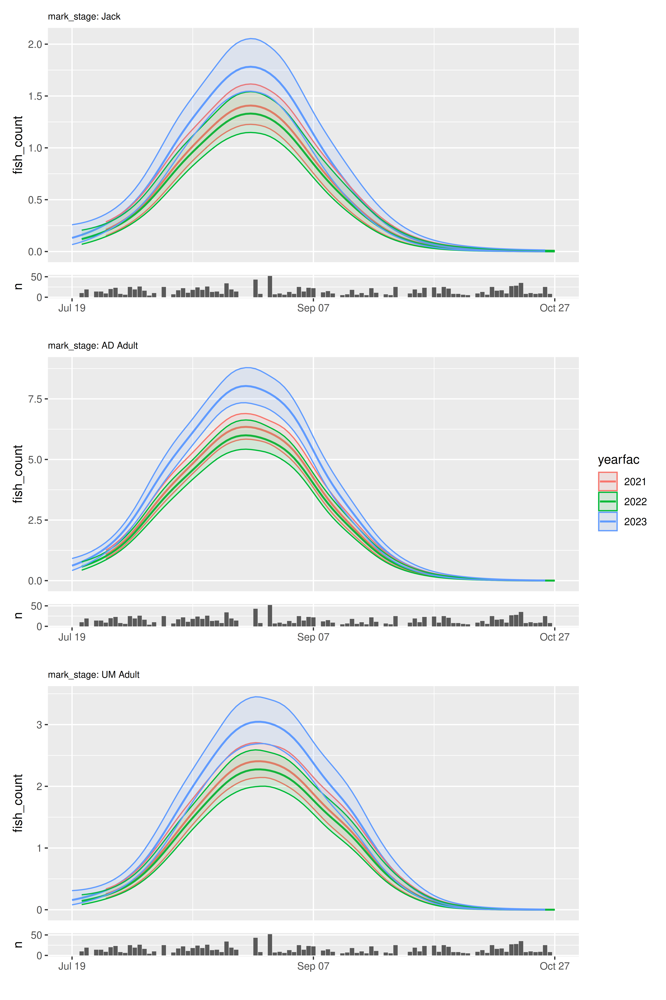
When including multiple curves in each panel, the confidence
envelopes can make interpretation challenging. Use
include_cis = FALSE to turn off envelope plotting:
model |>
plot_seasonal_gam_panels(color_by = "yearfac", include_cis = FALSE) |>
wrap_panels(ncol = 1)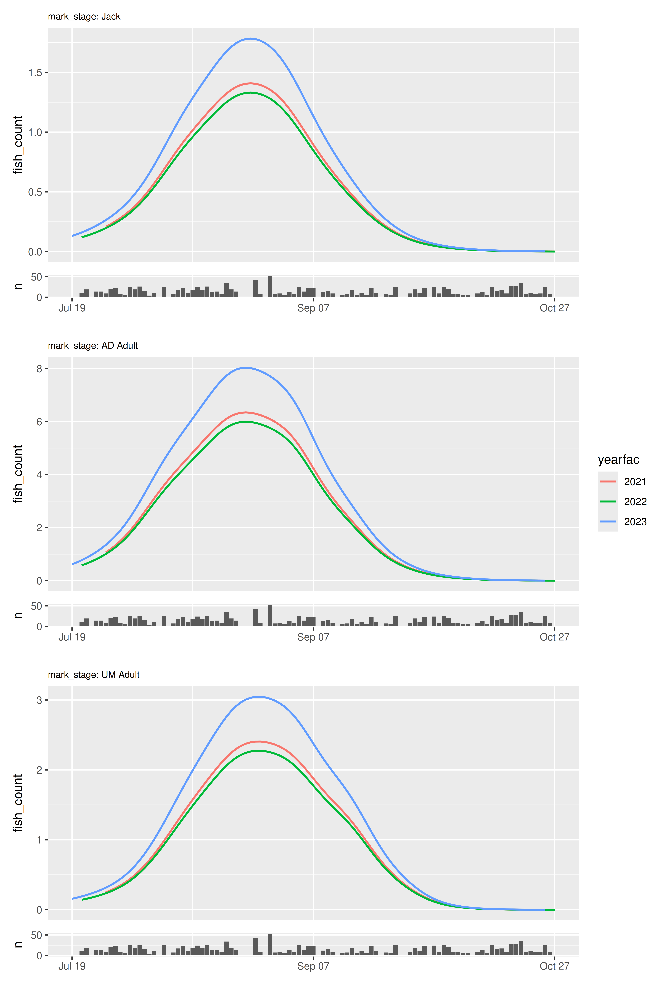
Note that including a color_by variable removes a column
from the resulting panels tibble; this means that column is no longer
available for grid_panels() calls.
model |>
plot_seasonal_gam_panels()## → `color_by` not provided. Defaulting to no color.## → Options for `color_by`: mark_stage and yearfac.## # A tibble: 9 × 3
## mark_stage yearfac .plot
## <fct> <fct> <list>
## 1 Jack 2021 <patchwrk>
## 2 AD Adult 2021 <patchwrk>
## 3 UM Adult 2021 <patchwrk>
## 4 Jack 2022 <patchwrk>
## 5 AD Adult 2022 <patchwrk>
## 6 UM Adult 2022 <patchwrk>
## 7 Jack 2023 <patchwrk>
## 8 AD Adult 2023 <patchwrk>
## 9 UM Adult 2023 <patchwrk>
model |>
plot_seasonal_gam_panels(color_by = "yearfac")## # A tibble: 3 × 2
## mark_stage .plot
## <fct> <list>
## 1 Jack <patchwrk>
## 2 AD Adult <patchwrk>
## 3 UM Adult <patchwrk>Shared scales
By default, each panel is plotted on its own scale. This ensures that each set of model predictions is easily interpretable, but can make the visualizations misleading when comparing between panels.
For example, our model is constructed such that the smooths across day of year cannot differ between years, but we include a fixed effect of years. This means that looking along rows in our grid_panels(), it is easy to mistakenly assume predicted fish count is identical in each year.
model |>
plot_seasonal_gam_panels() |>
grid_panels(column_var = "yearfac", row_var = "mark_stage")## → `color_by` not provided. Defaulting to no color.## → Options for `color_by`: mark_stage and yearfac.grid_panels() has optional arguments to control shared
scales: scales_x (controls sharing of x axis limits),
scales_y (controls sharing of y axis limits of primary
plot), and scales_y_coverage (controls sharing of y axis of
coverage plots; ignored if coverage plots are not included). Each of
these arguments defaults to "free" (each panel varies
freely), but can take any of the following arguments:
-
"fixed_column": panels in the same column share limits in the specified dimension. -
"fixed_row": panels in the same row will share the limits in the specified dimension -
"fixed_combination": panels in the same row x column combination will share limits in the specified dimension. Relevant when there are more than one panel for each column x row combination (see below), -
"fixed_all": all panels share limits in the specified dimension.
So to ensure that the fish counts within each row are comparable across columns, we should use `scales_y = “fixed_row”
model |>
plot_seasonal_gam_panels() |>
grid_panels(column_var = "yearfac", row_var = "mark_stage",
scales_y = "fixed_row")## → `color_by` not provided. Defaulting to no color.## → Options for `color_by`: mark_stage and yearfac.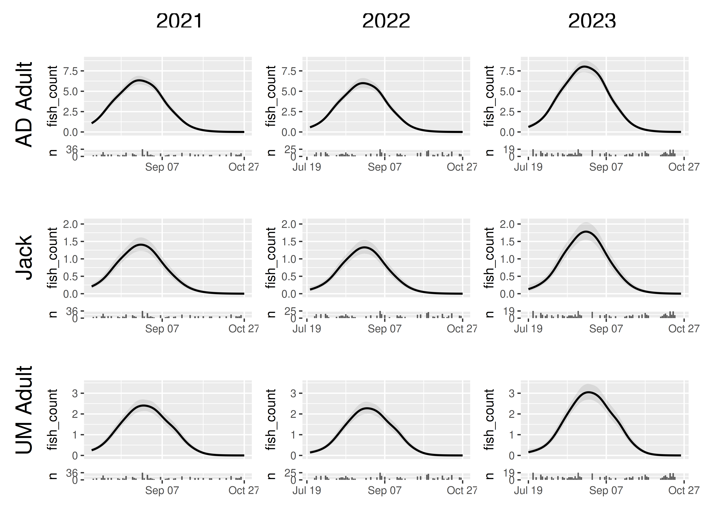
These arguments make it possible to emphasize differences between panels or details within panels, as needed. For example, when presenting to people more focused on the practical outcomes, it may be most appropriate to use “fixed_all”:
model |>
plot_seasonal_gam_panels() |>
grid_panels(column_var = "yearfac", row_var = "mark_stage",
scales_y = "fixed_all",
scales_x = "fixed_all")## → `color_by` not provided. Defaulting to no color.## → Options for `color_by`: mark_stage and yearfac.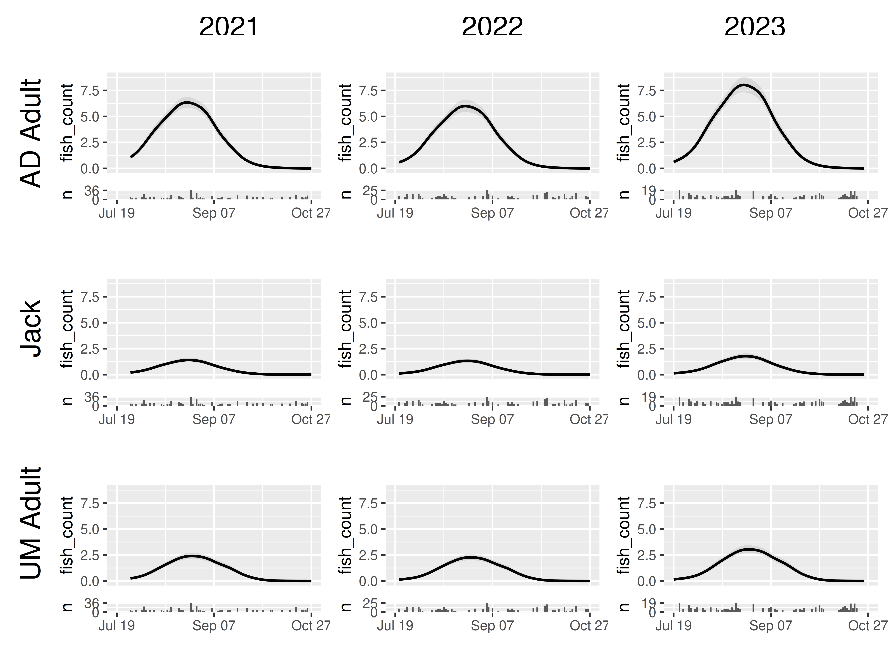
The default behavior is "free" for all scales but unless
you have a specific need it is probably best to start with
scales_x = "fixed_all".
Presently there is no equivalent implementation for
scales_* arguments in wrap_grids() (there are
not natural choices for grouping panels to share scales), but I will be
adding this with "free" and "fixed_all"
options.
Sub-panels and augmented panel tibbles
First, a fun feature of grid_panels is that it handles
cases in which multiple rows of the panel tibble match the criterion of
a given row and column. As an example, we will create a dataset that has
a bit of new data: Jacks with a different treatment in 2022 and 2023. To
make it interesting, we will allow the smooth across day of year to vary
by tratment as well as mark_stage.
data2 = simulate_data() |>
filter(mark_stage == "Jack",
yearfac %in% c("2022", "2023")) |>
mutate(treatment = "B")
data_joint = data |>
mutate(treatment = "A") |>
bind_rows(data2) |>
mutate(treatment = as.factor(treatment))
model2 = gam(fish_count ~
te(doy, mark_stage, treatment, bs = c("tp", "fs", "fs")) +
yearfac,
method = "REML",
family = "nb",
data = data_joint)Now if we use grid_panels() by year and mark_stage, we
have multiple prediction panels for several of our jack treatments.
grid_panels has no problem handling that:
model2 |>
plot_seasonal_gam_panels() |>
grid_panels(column_var = "yearfac", row_var = "mark_stage")## → `color_by` not provided. Defaulting to no color.## → Options for `color_by`: yearfac, mark_stage, and treatment.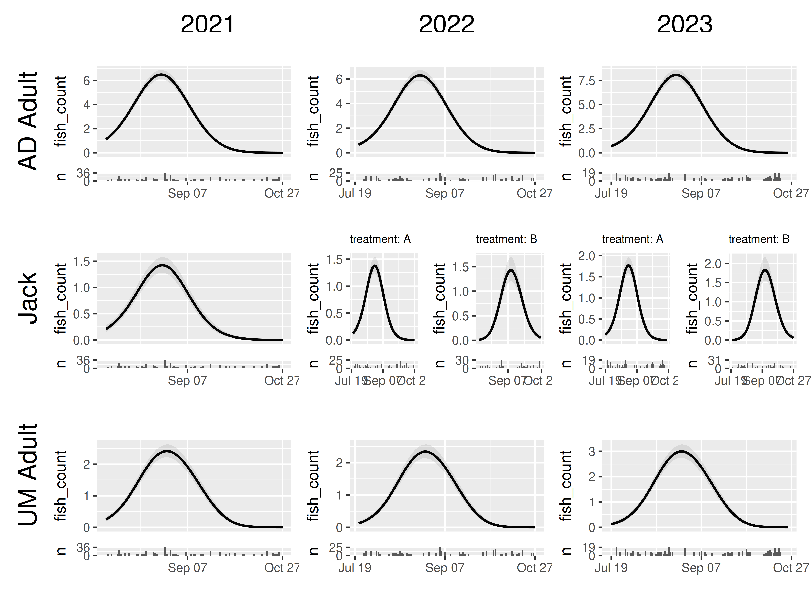
Second, because wrap_panels and grid_panels work on a panel of tibbles rather than directly from a fitted model, we can combine tibbles from different models. The most obvious use is to compare how choices of model structure or fitting options affect the resulting predictions. For example, how different are our results if we use a Gaussian error distribution instead of a negative binomial? (This helps illustrate why it’s valuable to specify a count distribution for count data)
We’ll keep making our grid by “yeafac” and “mark_stage”, so we’ll
have to subpanels, one for each model. To make results between the
models easily comparable, we’ll set
scales_y = "fixed_combination". This will ensure that we
can reasonably compare between the model subpanels, while ensuring that
differences in fish counts between mark_stage or yearfac don’t make some
sets of model predictions unreadable.
model_nb = gam(fish_count ~ mark_stage +
s(doy, by = mark_stage, k = 20) +
yearfac,
method = "REML",
family = "nb",
data = data)
model_gaus = gam(fish_count ~ mark_stage +
s(doy, by = mark_stage, k = 20) +
yearfac,
method = "REML",
family = "gaussian",
data = data)
panels_nb = model_nb |>
plot_seasonal_gam_panels() |>
mutate(family = "negative binomial")## → `color_by` not provided. Defaulting to no color.## → Options for `color_by`: mark_stage and yearfac.
panels_gaus = model_gaus |>
plot_seasonal_gam_panels() |>
mutate(family = "gaussian")## → `color_by` not provided. Defaulting to no color.
## → Options for `color_by`: mark_stage and yearfac.
panels_joint = bind_rows(panels_nb, panels_gaus)
panels_joint |>
grid_panels(column_var = "yearfac", row_var = "mark_stage",
scales_x = "fixed_all", scales_y = "fixed_combination")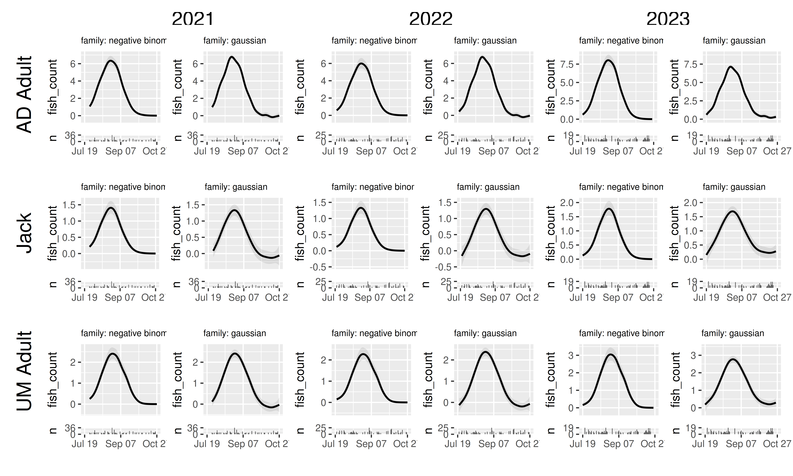
Here we can see how the negative binomial correctly represents heteroskedasticity, and (depending on your simulation values) we may see the gaussian predicting negative fish counts.
Combining panels tibbles allows us to quickly compare the
consequences of choosing different model structures, model fitting
settings, or even the effects of modifying the data (e.g. removing
outliers, reducing sample sizes, etc). In fact, this use is so prevalent
in my own workflow that I have added the ability for
plot_seasonal_gam_panels() to handle this on its own: if you give a
named list of models rather than a single model,
plot_seasonal_gam_panels() will create a panel tibble for
each model, add a $model column with value equal to the
model name, and then return the joint panel tibble. (If you want the
model column named something else, like if you are actually comparing
models fit to different datasets and prefer the label be “data”, you can
modify this with the optional model_label argument.)
plot_seasonal_gam_panels(list("gaussian" = model_gaus,
"negative binomial" = model_nb)) |>
grid_panels(column_var = "yearfac", row_var = "mark_stage")## → `color_by` not provided. Defaulting to no color.## → Options for `color_by`: mark_stage and yearfac.## → `color_by` not provided. Defaulting to no color.## → Options for `color_by`: mark_stage and yearfac.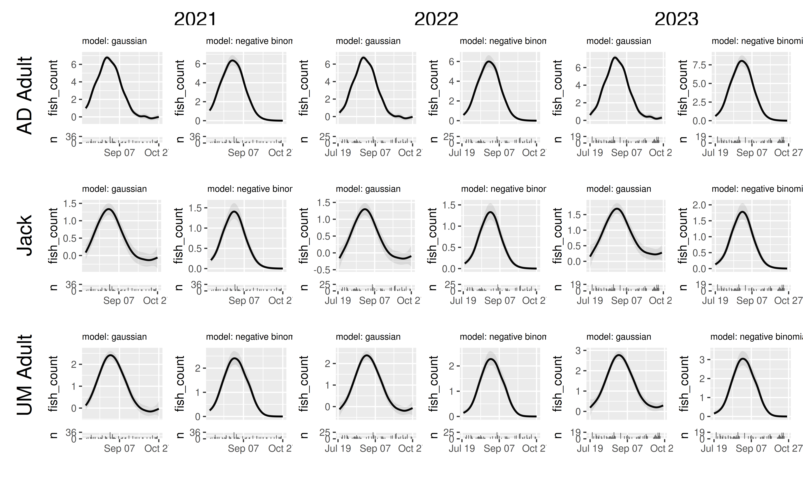
Fiddly graphics tweaking
VizSeasonalGams is not intended to make
publication-ready plots, but it is intended to produce visualizations
that can be shared with collaborators, stakeholders, and other
interested parties. With this in mind there are several optional
arguments to change aspects of the visualization:
plot_seasonal_gam_panels()
- quant_trimming: restricts prediction range based on quantiles of the
available
plot_bydata for each combination of categorical variables. Defaults to 0.01, increase to restrict prediction curves to regions that are better supported by the data. - breaks_x: approximate number of breaks used when plotting the x axis. Defaults to 3.
wrap_panels() and grid_panels()
- title_size: changes the font size of the panel titles. Useful when working with model that has many categorical predictors – changing the title size can help make sure all factors are readable. Defaults to 8.
wrap_panels() only
-
ncol,nrow: determines the number of columns or rows to use when combining panels into a single figure; analogous toncolandnrowofggplot2::facet_wrap().
grid_panels() only
-
panel_titles: by default, grid_panel() only includes panel title information that isn’t represented by column and row labels. However, it can be useful to include all variable values represented by a panel (e.g., for screenshotting subsets of a grid). Defaults toFALSE, set toTRUEfor complete panel titles. -
col_title_ratio,row_title_ratio: handling the whitespace in patchwork plots is a bit imperfect; two arguments allow you to tweak the relative amount of space taken up by the primary content and the column and row titles. Defaults to 30. Reduce to increase space taken up by column and row titles. -
font_size: font size of column and row headers. Defaults to 18 -
new_y_label,new_x_label: allows relabeling of the X and Y axes of panels to improve readability.
References
Pedersen EJ, Miller DL, Simpson GL, Ross N. 2019. Hierarchical generalized additive models in ecology: an introduction with mgcv. PeerJ 7:e6876 https://doi.org/10.7717/peerj.6876